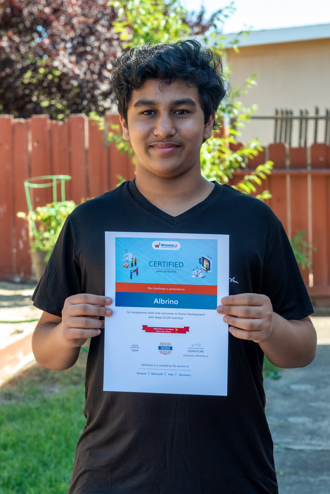

Hello there! I'm Albrino Fernando, a 9th grade student with a great passion for programming. I currently am living in California where I'm engaged in highschool. Though I come from humble roots, I hope to one day do something amazing that will leave a mark on Earth.
Albrino hard at work
However as you can guess, I do things other than trying my best in school, like coding. I currently know HTML, CSS (which is how this website was made), Javascript, matter JS, Python, and C#. With this I mostly make games which you can find over in the projects page of this site. There are many concepts I've learned through game designing like complex looping, databases, color choice, which have helped me a lot not only in making my projects, but also understanding how other games and websites work which in turn help me create better games.
However as you can guess, I do things other than trying my best in school, like coding. I currently know HTML, CSS (which is how this website was made), Javascript, matter JS, Python, and C#. With this I mostly make games which you can find over in the projects page of this site. There are many concepts I've learned through game designing like complex looping, databases, color choice, which have helped me a lot not only in making my projects, but also understanding how other games and websites work which in turn help me create better games.
Albrino showcasing a certificate he got from Whitehat Jr.
To help further my understanding of programming languages I've went to a few workshops before. A few at microsoft, one at cisco, they've all helped me as a person as it got me a bit more social and gave a place to mingle with others who have similar likings such as programming. Going to these workshops really helped me not only do better in my coding, but do better as person.